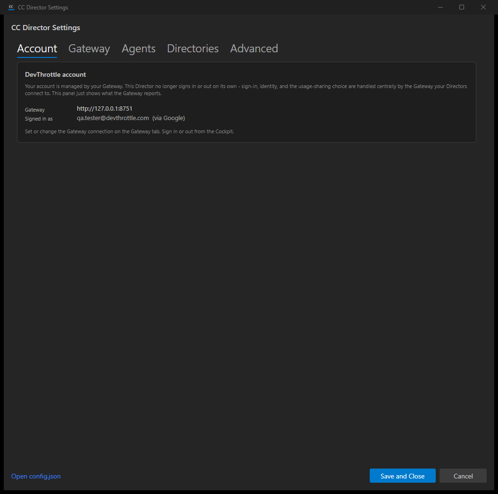
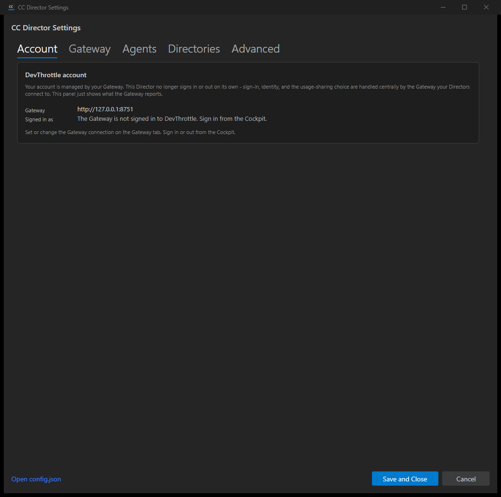

Issue: [Desktop] Remove the Director's account/consent/sign-in surfaces; show read-only gateway connection
Pull request: 684 (branch issue-651-remove-director-account-surfaces, head c0b8d7a)
Verification method: Independent rebuild in an isolated worktree (devthrottle-wt-651) and slot (14), launched against a stub Gateway with an isolated CC_DIRECTOR_ROOT so the user's real configuration was never touched.
QA identity / date: QA Agent, 2026-06-22.
| # | Criterion | Expected | Actual | Result |
|---|---|---|---|---|
| 1 | Settings -> Account shows a read-only gateway connection + identity panel (no logout, no consent toggle), sourced from the gateway. | Panel shows gateway URL + signed-in identity from /account/status; informational signed-out / not-connected states; not a gate. |
Launched against a stub Gateway. Director log shows GatewayAccountStatusClient.GetStatusAsync: GET http://127.0.0.1:8751/account/status -> 200, signedIn=True. Panel rendered "Gateway: http://127.0.0.1:8751" and "Signed in as: qa.tester@devthrottle.com (via Google)". Signed-out stub -> "The Gateway is not signed in to DevThrottle. Sign in from the Cockpit." Stub down -> "Could not reach the Gateway at http://127.0.0.1:8751." No logout button, no consent toggle on the tab; the Director booted straight to the main window in every state ("Booting straight to the main window (account is managed by the Gateway)"). |
PASS |
| 2 | FirstRunConsentDialog removed and no longer shown. |
No remaining reference; file deleted; not shown at startup; build clean. | Repo-wide grep for FirstRunConsentDialog returns zero hits (file FirstRunConsentDialog.axaml/.cs deleted in the PR). App.axaml.cs startup explicitly comments "no startup gate and no first-run consent step any more" and boots straight to the main window. |
PASS |
| 3 | No Director code path opens a devthrottle.com sign-in; the per-Director "sign in to DevThrottle" surface is gone. | No Director sign-in surface; AccountGateScreen removed; the browser-opening login coordinator no longer used by the Director. |
AccountGateScreen, AccountGatePolicy, GateDecision, FirstRunConsent grep to zero references (all deleted). FirstRunLoginCoordinator (the only browser-opening sign-in code) is now referenced ONLY by the Gateway (GatewaySignInService) and its tests - never by Avalonia/App. Remaining devthrottle.com strings in Director code are a Documentation menu link (/docs) and telemetry/transcription endpoint constants - not sign-in surfaces. The Avalonia AccountsDialog manages the local Claude CLI credential (claude login), unrelated to DevThrottle account. |
PASS |
| 4 | dotnet build cc-director.sln clean; removed types have no lingering references. |
Build succeeded, 0 warnings, 0 errors. | Built in the worktree: Build succeeded. 0 Warning(s) 0 Error(s). No dead-reference warnings; grep confirmed no lingering references to any removed type. |
PASS |
| 5 | A screenshot shows the Director's read-only connection/identity panel. | Screenshot of the live panel. | Three live screenshots captured below (signed-in, signed-out, not-connected). | PASS |
| Suite / check | Result |
|---|---|
| CcDirector.Gateway.Tests | 949 passed, 0 failed, 1 skipped |
| CcDirector.Core.Tests | 2354 passed, 0 failed, 6 skipped |
| CcDirector.Avalonia.Tests | 82 passed, 0 failed |
| CcDirector.Cockpit.Tests | 66 passed, 0 failed |
| Gateway account/sign-in endpoints still wired | GET /account/status, POST /account/logout, GatewaySignInService (reusing kept Core FirstRunLoginCoordinator) all present and mapped in GatewayHost. Kept shared Core.Account types are still genuinely used by the Gateway. |
| Full solution build | dotnet build cc-director.sln: 0 Warning(s), 0 Error(s) |
No GatewayApp.Tests project exists; GatewayApp builds clean as part of the solution build.


PASS - all 5 acceptance criteria verified independently; the Gateway side is confirmed not broken by the Director-side removals.